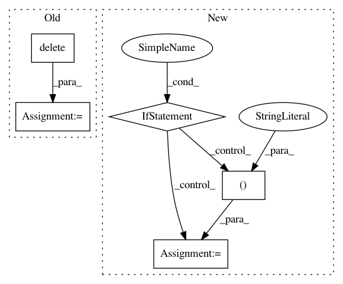

e81142f0869321cd8792e13bfc4f6fb85d9f1efc,libact/query_strategies/uncertainty_sampling.py,UncertaintySampling,make_query,#UncertaintySampling#,62
Before Change
min_margin = np.inf
for j in range(len(prob)):
m1_id = np.argmax(prob[j])
m2_id = np.argmax(np.delete(prob[j], m1_id))
margin = prob[j][m1_id] - prob[j][m2_id]
if margin < min_margin:
min_margin = margin
ask_id = j
After Change
np.max(np.abs(self.model.predict_real(X_pool)), axis=1)
)
elif self.method == "sm": // smallest margin
dvalue = self.model.predict_real(X_pool)
if np.shape(dvalue)[1] == 2:
ind = [0, 1]
else:
// Find 2 largest decision values
ind = np.partition(-np.abs(dvalue), 2, axis=1)[:2]
margin = np.abs(np.abs(dvalue[:, ind[0]]) - np.abs(dvalue[:, ind[1]]))
ask_id = np.argmin(margin)
return unlabeled_entry_ids[ask_id]
def get_model(self):
In pattern: SUPERPATTERN
Frequency: 3
Non-data size: 5
Instances
Project Name: ntucllab/libact
Commit Name: e81142f0869321cd8792e13bfc4f6fb85d9f1efc
Time: 2015-12-22
Author: yangarbiter@gmail.com
File Name: libact/query_strategies/uncertainty_sampling.py
Class Name: UncertaintySampling
Method Name: make_query
Project Name: cmu-db/ottertune
Commit Name: 21971e673fabe25d3e7da6712f80222760516113
Time: 2020-02-26
Author: bohanzhang95@gmail.com
File Name: server/website/website/tasks/async_tasks.py
Class Name:
Method Name: clean_metric_data
Project Name: idaholab/raven
Commit Name: 4765eff8a5872eabcc8193371435dd81518e6802
Time: 2020-10-10
Author: mohammad.abdo@inl.gov
File Name: framework/Optimizers/GeneticAlgorithm.py
Class Name: GeneticAlgorithm
Method Name: _useRealization